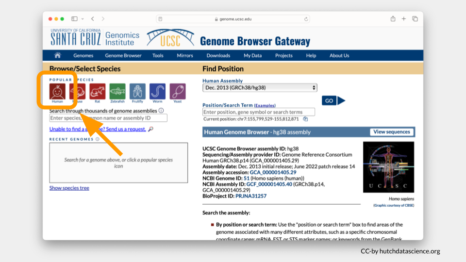
Epigenetics Explorer: Differentiating Cell Types
This activity will walk through an epigenetic exploration of the HOXA locus, involving different histone markers and cell types.
Part 1: Background
The Central Dogma describes the fundamental flow of biological information: DNA is transcribed into RNA, which is then translated into protein. While we often think of this as a linear process, the physical reality inside a cell nucleus is more complex. The human genome contains roughly 3 billion base pairs of DNA, yet it must be compacted to fit inside a tiny cell nucleus. This is achieved by wrapping DNA around histone proteins to form chromatin. How tightly DNA is wrapped directly dictates gene expression: tightly packed chromatin (heterochromatin) is physically inaccessible to the transcriptional machinery, effectively silencing the genes within it, while loosely packed chromatin (euchromatin) permits transcription factors and RNA polymerase to access the DNA and initiate gene expression. So before a gene can even begin the journey from DNA to protein, the chromatin must be in the right configuration.
Histones are small, positively charged proteins that DNA (which is negatively charged) wraps around. Eight histones together create the fundamental repeating unit of chromatin, the nucleosome. Extending from each histone is an unstructured “tail” that protrudes from the nucleosome and serves as a critical regulatory platform. These tails are subject to a wide variety of covalent chemical modifications, including acetylation, methylation, phosphorylation, and ubiquitination, each at specific amino acid residues (particularly lysine and arginine). The combination of modifications present on a given nucleosome determines whether a nearby gene is silenced or expressed.
HOX genes have an important role in proper embryonic development and occur similarly across many organisms, including fruit flies (Drosophila). For humans, these genes ensure certain organs develop close to the proper place along the vertebral column [hubert2023hox]. HOX genes are turned on (expressed) not only during embryo formation but also in adult organisms, where they are necessary for functional differentiation of cells. Many HOX genes belong to a special group of genes called transcription factors that help turn other genes on and off. These genes dictate what, when, and where structures get built. Mutations in HOX genes are associated with several cancers, including breast, pancreatic, lung, liver, and ovarian cancer [hubert2023hox, shah2010hox]. HOXA9 mutations can induce acute myeloid leukemia (AML) in mice and humans [calvo2001meis1a]. However, modifications to chromatin structure can affect HOX gene expression as well.
This activity will walk through several histone modifications that can happen near the HOXA locus, exploring different cell types and parts of this area of the genome.
Part 2: Setting Up the Genome Browser
Launch the Genome Browser Gateway
Go to https://genome.ucsc.edu/cgi-bin/hgGateway.
Click “Human” under “Browse/Select Species”.
You will be working from the Human Assembly Mar. 2006 (NCBI36/hg18). Make sure this is selected under the “Find Position” dropdown menu.
Enter HOXA7 in Position/Search Term and select GO.
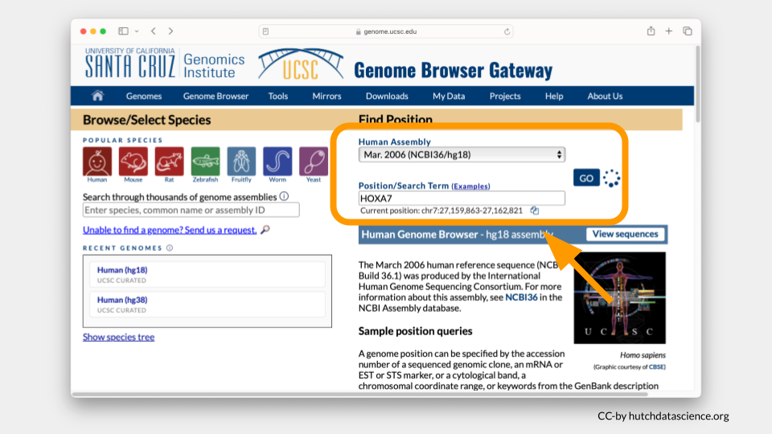
Your Genome Browser should now look like this. There’s a lot going on!
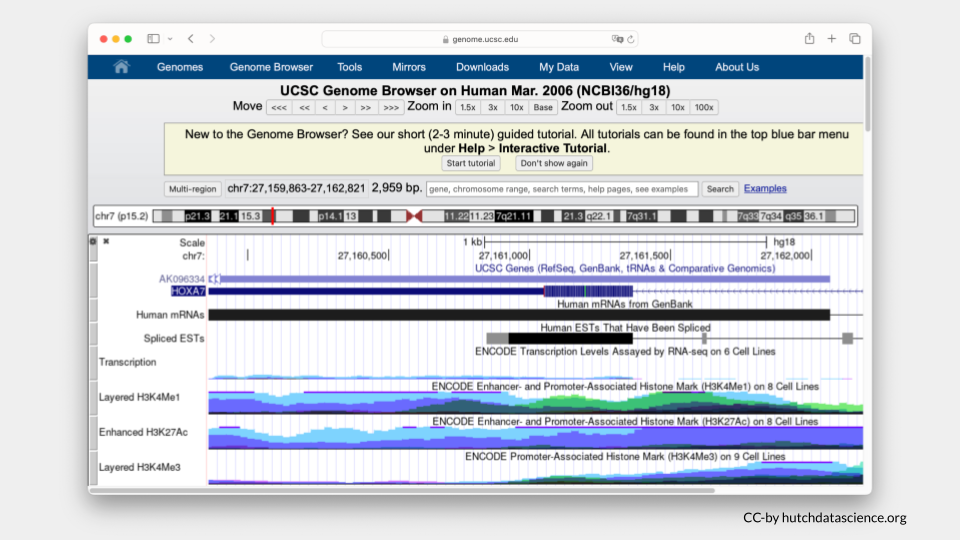
Clean up Visual Settings
Let’s make this easier to look at.
Scroll down to “Visible Tracks”. Select “Hide” under all the drop downs except “UCSC Genes” and “NCBI RefSeq”. Set these to “Pack” and “Full”, respectively.
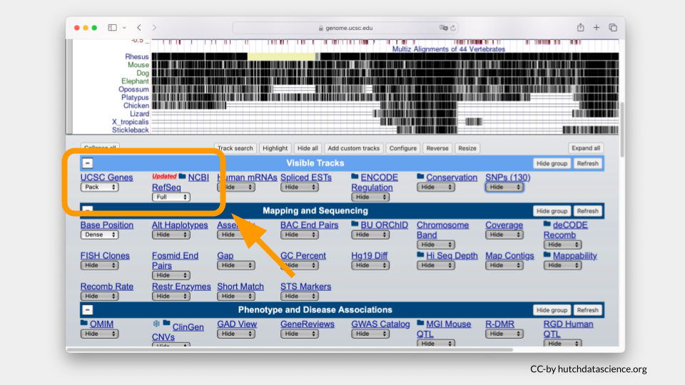
Click “Refresh” to update the viewer.
Your browser should look like the image below, where only HOXA7 is shown.
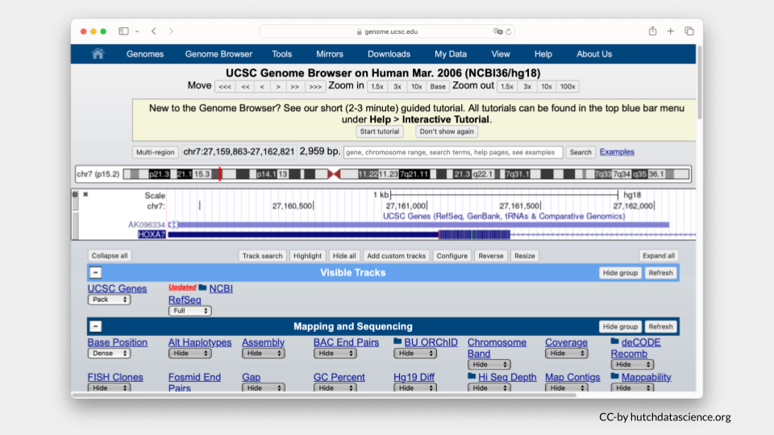
Zooming Out
Zoom out your display by 10x, 3x or 1.5x to see HOXA1-HOXA13 genes on your browser. The zoom out value you’ll select will be dependent on your computer display screen. You may need to use the zoom in option if you’ve zoomed out the display beyond the HOXA1-HOXA13 genes. Zoom buttons can be clicked more than once.
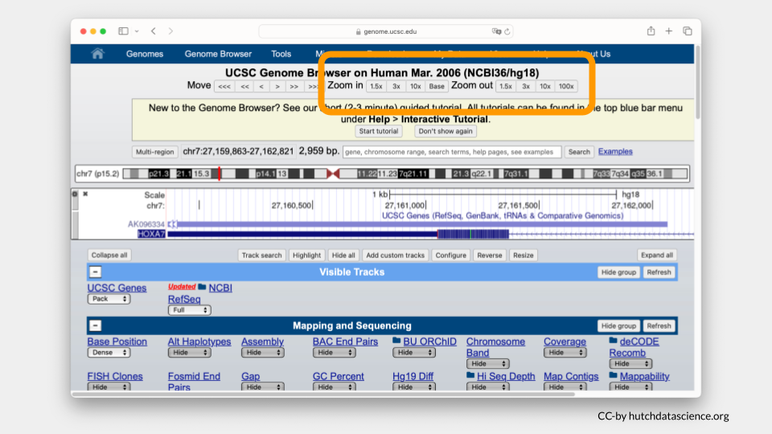
Instead of zooming in and out, you can always manually enter your chromosome region of choice. For this exercise, try entering the following region: chr7:27,087,367-27,235,317. Click “Search”.
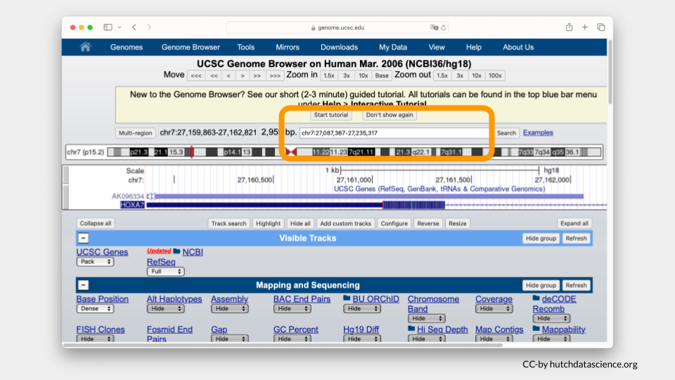
Ideally your browser should like the image below.
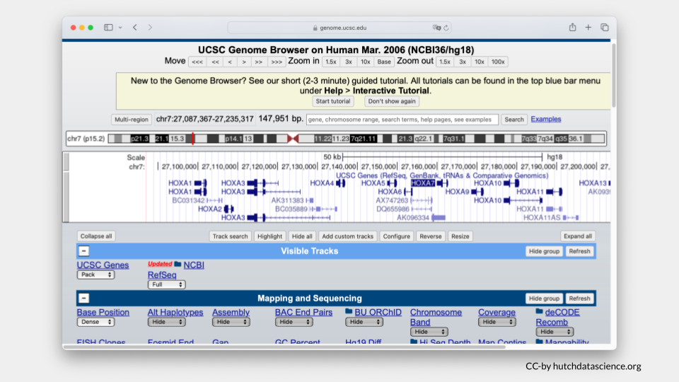
Tip
You could also enter chr7:27,087,367-27,235,317 in the search bar at the start of this exercise instead of HOXA7.
Part 2 Questions
NoteCheck Your Knowledge
Which genes are on either side of HOXA7? Take a screenshot and point to these genes.
What gene or genes are present at chr7:27,110,536-27,132,455? Take a screenshot of this location in the genome.
Part 3: Selecting and Comparing Histone Marks
Selecting Histone Marks
Now we’ll visualize histone marks to show that the same chromosome locus can have drastically different histone patterns.
Scroll down to the “Regulation” menu and click the Broad Histone track hyperlink.
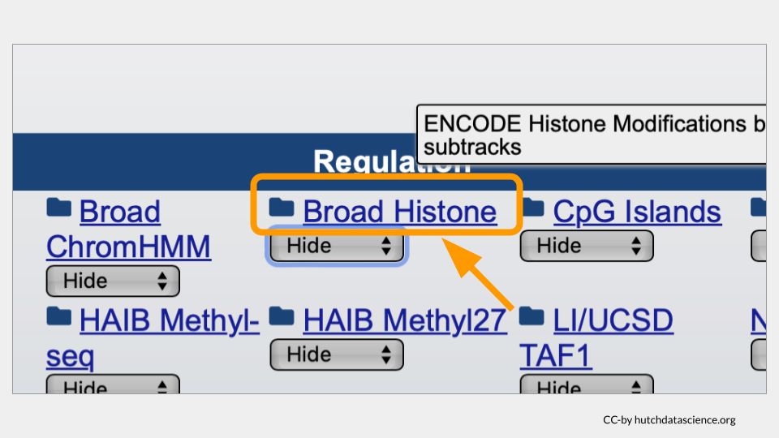
Scroll down and deselect all boxes by clicking on the “-” sign next to “All”.
Select H3K4me3 and H3K27me3 marks for H1-hESC and NHLF. To learn more about these options you can click on their blue hyperlinks for more information.
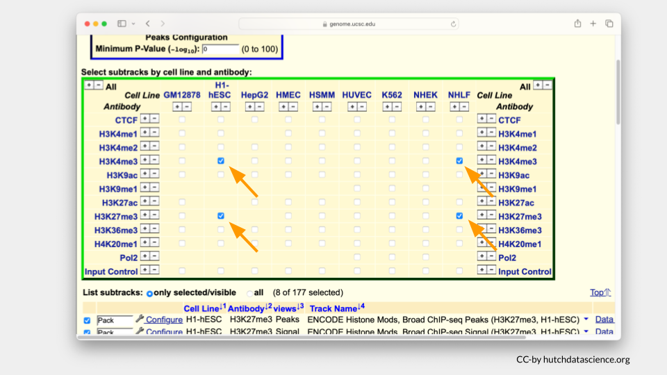
Note
H3K4me3 is a known histone mark on Histone 3 (H3). It occurs on lysine 4 (K4) and has three methyl groups (me3) that indicate active gene expression. In other words, the DNA is open and ready to be accessed.
H3K27me3 is a known histone mark on on Histone 3 (H3). It occurs on lysine 27 (K27) and has three methyl groups (me3) that indicate inactive gene expression. In other words, the DNA is closed off and cannot be accessed.
The H1-hESC cell line consists of embryonic stem cells.
The NHLF cell line consists of lung fibroblasts. Fibroblasts are important for building the connective structures around cells and healing wounds.
Scroll below and deselect the Peak views. You will only need Signal views.
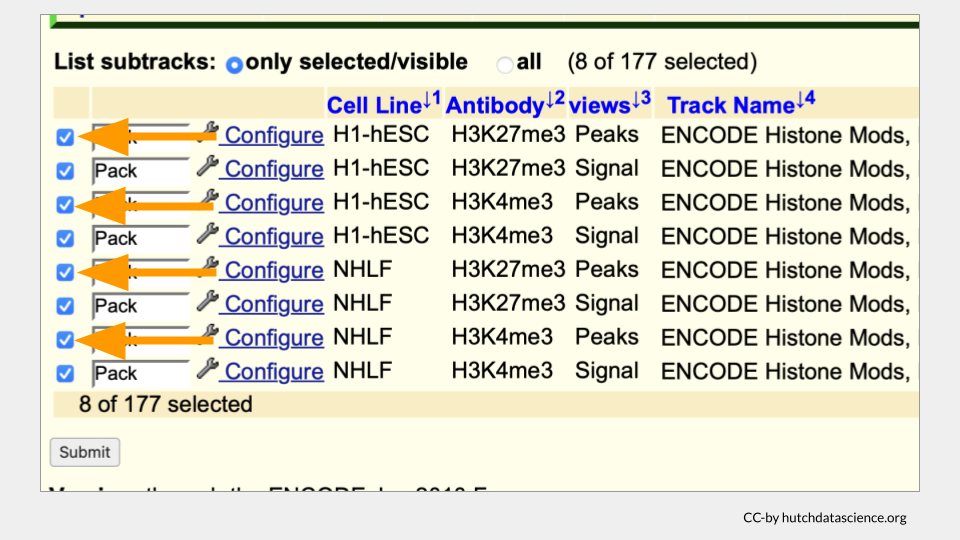
Your selected subtracks should only display Signal views as shown below. Click “Submit”.
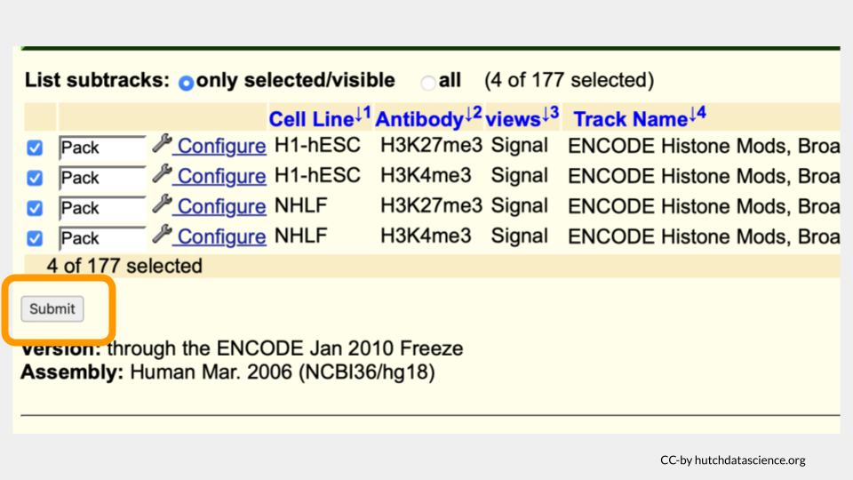
Your browser should look like the image below.
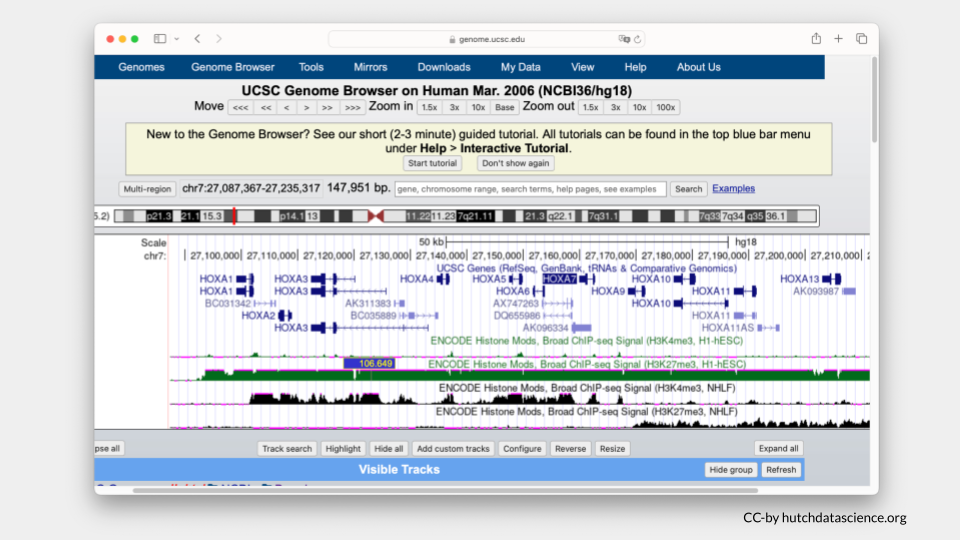
Comparing Histone Marks
Let’s first examine the H1-hESC cell line (embryonic stem cells).
Signals are high for the H3K27me3 histone mark. You’ll also notice that H3K4me3 signals are minimal. This signal pattern demonstrates that embryonic stem cells are in the repressed chromatin configuration at the HOXA locus and indicates that HOXA genes in blue are not expressed in this cell line.
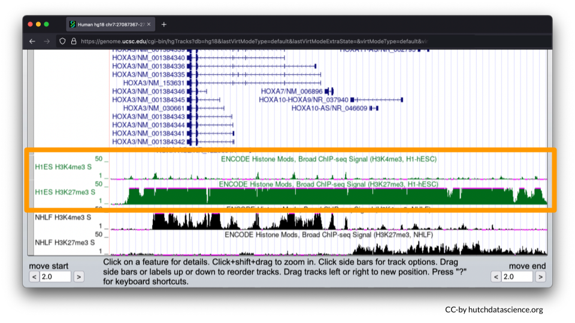
Now, let’s examine the NHLF cell line (lung fibroblasts).
The pattern is different for NHLF. H3K4me3 signals are high for the first half of the HOXA locus, but low for the second half of the locus.
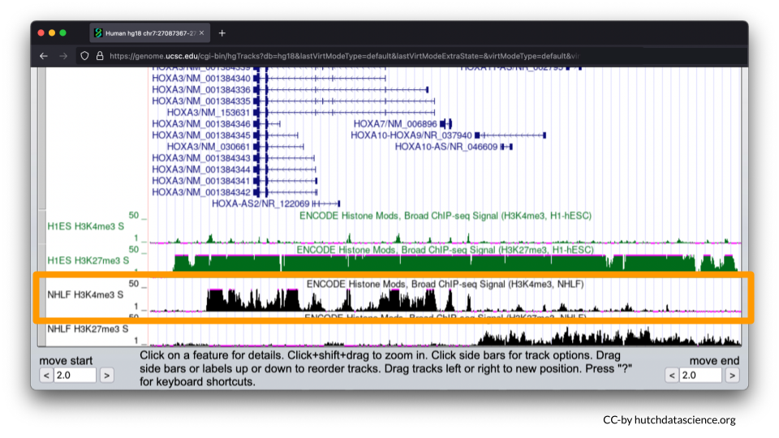
H3K27me3 signals are low and then high for the same locus.
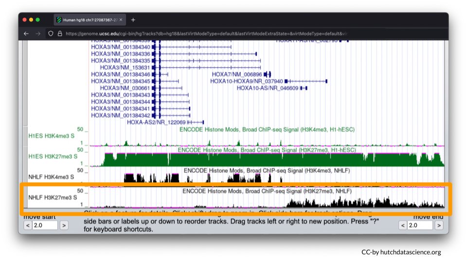
This signal pattern demonstrates that for lung fibroblasts only half of the HOXA locus is expressed while the other half is not expressed. Specifically, we can use the full image to see that HOXA1-7 are expressed (turned on).
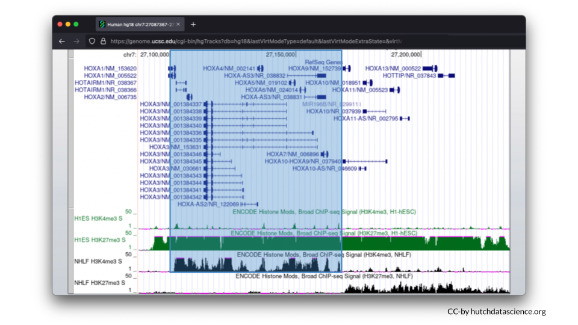
We can also see that HOXA9-13 is not expressed (turned off).
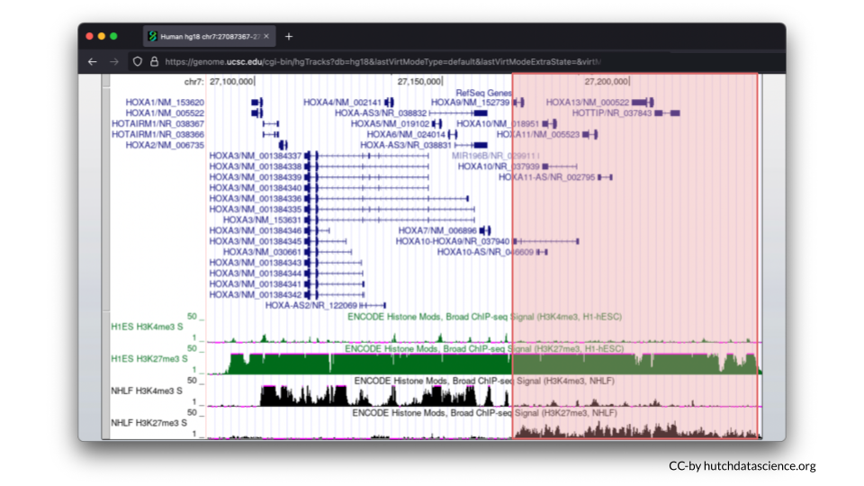
Part 3 Questions
NoteCheck Your Knowledge
The two cell lines differ in their gene expression (genes turned on or off). Does this mean that the genome varies as well? Why might gene expression vary?
Locate the HOXA5 gene and record the genome location (e.g., chr7:###-###). Exact numbers will vary a bit, but make sure the whole gene is in frame.
Return to the Broad Histone track menu and select cell line HUVEC (umbilical vein endothelial cells) and K562 (leukemia cells). Do these cell lines have expression turned on or off, or some other pattern for HOXA5?
Return to the Broad Histone track menu and find H3K27ac. Click on the link for this histone mark to learn more about it. Does H3K27ac work more like H3K4me3 or H3K27me3? Take a screenshot showing this histone mark across the HOXA locus (HOXA 1-13).